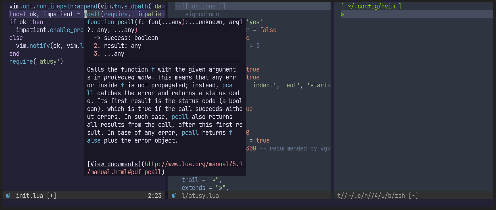

まあとりあえずオレのNeovim見て！
プラグイン増し増しで色々できるよ！とりあえずこの記事では見た目にインパクトありそうなこと紹介するよ。
補助ラベルによる効率的な操作
自作プラグインにより、補助ラベルを使った効率的な操作が可能です。
類似のプラグインは多数ありますが、私のユースケースを満たさなかったので自作しました。
行内の移動
Vim/Neovimにはf<文字>と入力すると指定した文字にカーソルを移動させる機能があります。プラグインによる発展形として、指定した文字にマッチする箇所にラベルをつけ、ユーザーが選択したラベルに移動することができます。
たとえば、以下の例ではf<space>と入力することで、カーソル右側のスペースにabcd…とラベルがつき、好きなラベルを選択して移動しています。また、ローマ字を応用して日本語に対してもジャンプ可能で、fnと入力することで、「に」や「日」にジャンプすることもできます。
f<space>ならカーソル右側に注目しますが、F<space>で左側に注目するなんてこともできます。
df<space>などとすると、選択箇所まで削除も簡単です。
表示範囲内の絞り込み検索
通常の検索では、候補を「前へ」や「次へ」で移動しますが、プラグインの力を使うと表示領域内の候補にラベルをつけて選択したラベルに移動できます。何度も「次へ」する苦労から解き放たれます。
以下の例では;を検索開始キーとしており、;exaと入力するに従って「e」にマッチ、「ex」にマッチ、「exa」にマッチと、絞り込んでいます。先程の行内の移動と同様に、ローマ字を応用して日本語に対してもジャンプ可能で、;reiと入力することで、最終的には「例」にジャンプしています。

範囲選択
プログラミングである範囲を削除したりコピーしたりしたいとき、たいてい範囲はプログラミング言語における意味のある塊です。 NeovimはTreesitterを用いた構文解析機能を内蔵しているので、解析結果を利用して範囲の両端にラベルをつけ、選択可能なプラグインを作りました。

既存プラグインは、ラベルを1度だけ選択しますが、私のプラグインでは必要に応じて段階的な選択を行います。
たとえば以下のようにnにカーソルがあるとき、選択したい範囲はprintかもしれませんし、print("Hello, world")かもしれません。しかし、どちらのケースも左端はpです。このため、左端を示すラベルがaとbの2つになり重なってしまいます。ユーザーは見えているラベルを選択するしかないので、いったんは見えている方を選択するしかありません。従来プラグインでは、選んでみるまでprintとprint("Hello, world")のどちらが選ばれるか分かりませんでした。私のtreemonkey.nvimはここを解決した形です。
print("Hello, world!")
# ^このnにカーソル詳しくはNeovimで文法に従ってコードを範囲選択するtreemonkey.nvimを作ったを御一読ください。
ウィンドウの移動
Vim/Neovimではhjklでカーソルを左下上右に移動できます。そのアナロジーで、CTRL-W + CTRL-Kすると、現在のウィンドウの上側に移動できます（注：ウィンドウはVS Codeなどでいうペインに近い概念です）。
しかし、たとえば以下の例で3にカーソルがあるとき、CTRL-W + CTRL-Kの移動先は1でしょうか2でしょうか？熟練のVimユーザーには明らかかもしれませんが、初心者にはわかりにくいです。
+---+---+
| 1 | 2 |
+---+---+
| 3 |
+---+---+この問題も、ウィンドウごとにラベルをふって移動先を明示的に指定することで解決できます。
発展的な用途として、選択したウィンドウを閉じる、現在のウィンドウと選択したウィンドウを入れかえるといったこともできます。プラグイン作者はtkmpypyさんですが、この機能は私が追加しました。
操作中のファイルを分かりやすくする
複数のファイルが画面上に並んでいると、編集中のファイルがどれかわかりにくくなることがしばしばあります。
そこで私は、styler.nvimというプラグインを使って、状況に応じてウィンドウの色を変えています。たとえば、以下の順で背景色を目立つものにしています。
- ツールチップ的に表示している関数のヘルプ
- アクティブウィンドウ
- その他

他にも、プロジェクト外部のファイルをまったく異なる色にして、意図せず編集することを防ぐなどの工夫もしてます。
詳しくは以下の記事を御覧ください。
これはそこそこ設定が混み入っているので、近くプラグイン化して誰でも使えるようにしたいですね。